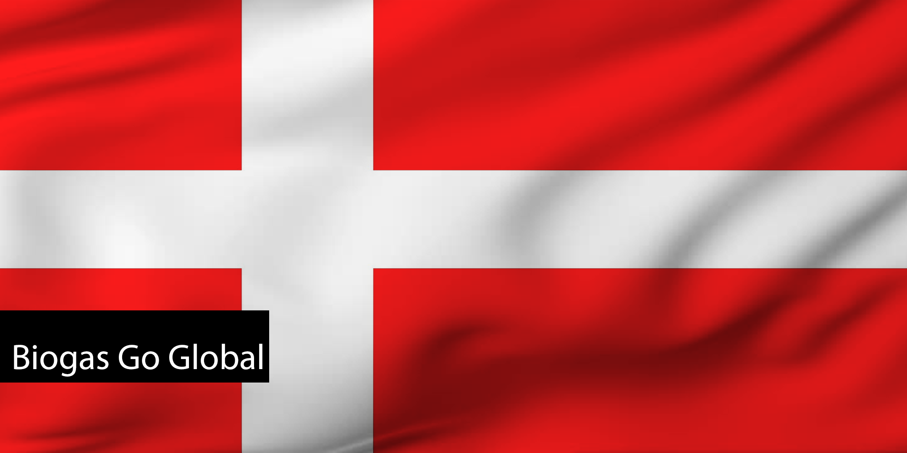
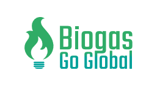
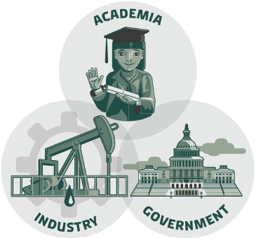
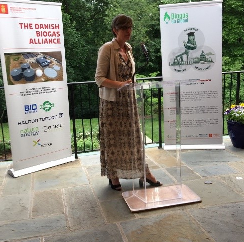
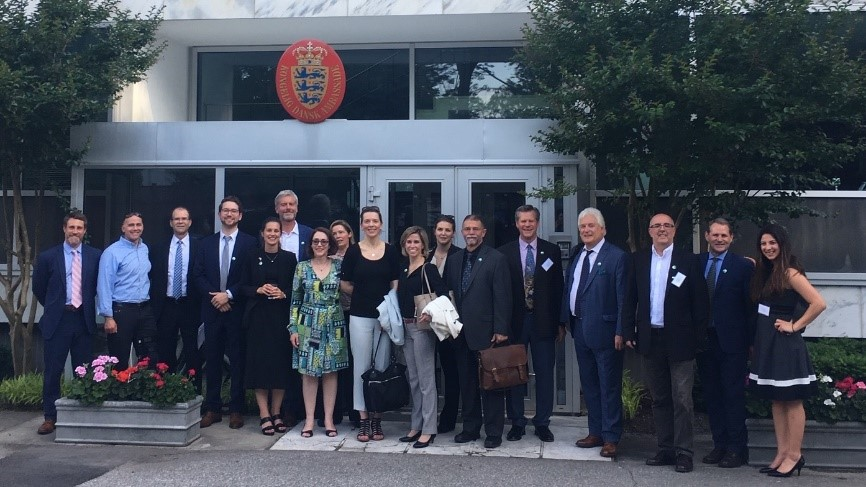

Biogas Go Global

Biogas Go Global (BGG) is a 3-year
effort funded by Denmark’s Industriens
Fond to advance biogas plants globally, allowing additional methane capture and use and
nutrient recycling. The program provides a platform for the accelerated growth of the biogas
industry in the United States and other BGG partner countries by establishing collaboration between
government, academia, and the private sector. The goal of BGG is to increase the biogas sector
through partnerships between Danish and BGG partner country stakeholders.
BGG gathers industry experts, regulators, and academia into one partnership to share information,
easing the workflow for all parties involved while increasing transparency within the industry.

Biogas Go Global ‘Triple Helix’ approach to advancing biogas: Authority, Knowledge, and
Companies
The BGG Partnership
-
Agro Business Park (ABP) has 17 years
of experience with international project management, partnerships,
business development, innovation, and bioenergy. ABP is the operator of the Danish Innovation Network for
Bioresources
(INBIOM), which for 12 years has completed more than 25
international network-creating activities within the biogas sector. The consortium behind
INBIOM includes Aarhus University, Aalborg Universities, the Technical University of
Denmark, and The Danish Technological Institute. INBIOM has more than 100 business members
from the biogas industry and is represented in more than 10 project consortia on the
development of new knowledge-based biogas technologies.
-
The Danish Trade Council
in North America is the governmental export and investment
promotion organization under the Ministry of Foreign Affairs of Denmark. The Trade Council
helps small and large companies to start exporting and expanding their activities to new
markets. The Waste, Recycling & Biogas Advisory (WBA) of the Trade Council is a dedicated
sector platform that offers specialized knowledge on key aspects of the biogas value chain.
The WBA aims to facilitate solutions sharing between Danish biogas companies and their
counterparts in the United States to help unlock commercial opportunities and accelerate
sustainable waste management projects, including biogas. Through alliance-based
collaboration, WBA acts as a full solutions provider to the U.S. market covering key
competencies for biogas production, including pre-treatment of organics, project development
and investment, design, engineering and construction, gas conditioning, and nutrient
recovery.
- The Danish Energy Agency handles Denmark's
interests in the energy and supply sectors in
the EU and seeks to disseminate the Danish experience with the energy transition for the
benefit of Danish export companies. The Danish Energy Agency's Center for Global
Counseling has established regulatory cooperation in 11 countries in addition to the United
States. The Danish Energy Agency’s advice enables the countries to prepare for greater
energy requirements in the future by making energy systems more efficient and by producing
energy with more renewable energy sources.
Barriers to Biogas Production
With Denmark’s knowledge of biogas production, BGG aims to break down the following barriers:
Federal and State Policy / Funding Parity
Biogas should be subject to the same conditions as those that apply to other forms of
renewable energy, such as solar and wind. Comprehensive energy and climate policies need to
be in place to acknowledge the additional environmental benefits of biogas production.
Feedstock Aggregation and New Models for Manure Management
Contractual visibility is a key issue for investors and project developers. An evaluation of
various alternatives and best practices to address this issue can create model rules and
model frameworks and lead to new business models and approaches that support more flexible
and economically viable ways to handle distinct organic fractions, including manures.
Not in My Back Yard
Investors, neighbors, and other stakeholders are somewhat reluctant to support biogas
production due to a lack of knowledge and experience with best-of-class operational
management of biogas plants as well as the important environmental advantages of biogas
production. Through knowledge sharing, this alliance can demonstrate successful biogas
projects supported by local communities.
Financial Risk and Uncertainty
The barriers to biogas production create financial risk and uncertainty, which makes it hard
to attract financing from public and private investors. The alliance will evaluate how
financial risk has been addressed in Denmark and the United States and make prioritized
recommendations to further mitigate such risk in different areas.

Ambassador Wisborg
welcomes the American Biogas Council Board to the Danish Embassy in Washington, DC.
For more information on the benefits of Biogas Go Global, please contact Claus Mortensen
from Agro Business Park, cm@agropark.dk.